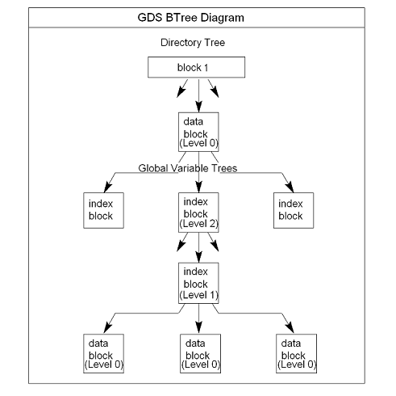

The GT.M database structure is hierarchical, based on a form of balanced tree called a B-star tree (B*-tree) structure. The B*-tree contains blocks that are either index or data blocks. An index block contains pointers used to locate data in data blocks, while the data blocks actually store the data. Each block contains a header and records. Each record contains a key and data.
GDS structures the data into multiple B*-trees. GT.M creates a new B*-tree, called a Global Variable Tree (GVT), each time the application defines a new named global variable. Each GVT stores the data for one named global, that is all global variables
(gvn) that share the same unsubscripted global name. For example, global ^A, ^A(1), ^A(2), ^A("A"), and
^A("B") are stored in the same GVT. Note that each of these globals share the same unsubscripted global name,
that is, ^A.
A GVT contains both index and data blocks and can span several levels. The data blocks contain actual global variable values,
while the index blocks point to the next level of block.
At the root of the B*-tree structure is a special GDS tree called a Directory Tree (DT). DT contains pointers to the GVT. A data block in the DT contains an unsubscripted global variable name and a pointer to the root block of that global variable's GVT.
All GDS blocks in the trees have level numbers. Level zero (0) identifies the terminal nodes (that is, data blocks). Levels greater than zero (0) identify non-terminal nodes (that is, index blocks). The highest level of each tree identifies the root. All the B*-trees have the same structure. Block one (1) of the database always holds the root block of the Directory Tree.
The following illustration describes the internal GDS B*-tree framework GT.M uses to store globals.

GT.M creates a new GVT when a SET results in the first use of an unsubscripted global name by referring to a subscripted or unsubscripted global variable with a name prefix that has not previously appeared in the database.
![[Important]](../common/images/important.jpg) | Important |
|---|---|
GVTs continue to exist even after all nodes associated with their unsubscripted name are KILLed. An empty GVT occupies negligible space and does not affect GT.M performance. However, if you are facing performance issues because you have many empty GVTs, you need to reorganize your database file using MUPIP EXTRACT, followed by MUPIP CREATE, and the MUPIP LOAD to remove those empty GVTs. |
The following sections describe the details of the database structures.
Index and data blocks consist of a block header followed by a series of records. The block header has four fields that contain information. The first field, of two bytes, specifies the block version. The second field, of one byte, specifies the block level. The third field, of four bytes, specifies the number of bytes currently in use in the block. The last field, of eight bytes, specifies the transaction number at which the block was last changed. An interpreted form of a block header looks like the following:
File /home/jdoe/.fis-gtm/V6.0-000_x86_64/g/gtm.dat Region DEFAULT Block 3 Size 262 Level 0 TN 3845EE V6
There is also be an empty field containing filler to produce proper alignment. The filler occurs between the first and second data field and causes the length of the header to increase from fifteen to sixteen bytes.
Records consist of a record header, a key, and either a block pointer or the actual value of a global variable name (gvn). Records are also referred to as nodes.
The record header has two fields that contain information. The first field, of two bytes, specifies the record size. The second field, of one byte, specifies the compression count.
![[Note]](../common/images/note.jpg) | Note |
|---|---|
Depending on the platform an extra byte may be added to the compression count, allowing compression counts of up to 1020. |
The interpreted form of a block with global ^A("Name",1)="Brad" looks like the following:
Rec:1 Blk 3 Off 10 Size 14 Cmpc 0 Key ^A("Name",1)
10 : | 14 0 0 61 41 0 FF 4E 61 6D 65 0 BF 11 0 0 42 72 61 64|
| . . . a A . . N a m e . . . . . B r a d|
The data portion of a record in any index block consists of a four-byte block pointer. Level 0 data in the Directory Tree also consists of four-byte block pointers. Level 0 data in Global Variable Trees consists of the actual values for global variable names.
A global variable node spans across multiple blocks if the size of its value exceeds one database block. Such a global variable node is called a "spanning node". For example, if ^a holds a value that exceeds one database block, GT.M internally spans the value of ^a in records with keys ^a(#SPAN1), ^a(#SPAN2), ^a(#SPAN3), ^a(#SPAN4), and so on. Note that #SPAN1, #SPAN2, #SPAN3, #SPAN4, and so on are special subscripts that are visible to the database but invisible at the M application level. GT.M uses these special subscripts to determine the sequence of the spanning nodes.
The first special subscript #SPAN1 is called a "special index". A special index contains the details about the size of the spanning node's value and the number of additional records that are necessary to hold its value. #SPAN2 and the rest of the records hold chunks of the value of the spanning node. During the load of a binary extract, GT.M uses these chunks to reconstitute the value of a global. This allows globals to be re-spanned if the block size of the source database is different from the block size of the destination database.
| Note |
|---|---|
If the destination database's block size is large enough to hold the key and value, then the global is not a spanning node (because it can fit in one database block). |
A key is an internal representation of a global variable name. A byte-by-byte comparison of two keys conforms to the collating sequence defined for global variable nodes. The default collating sequence is the one specified by the M standard. For more information on defining collating sequences, see the "Internationalization" chapter in the GT.M Programmer's Guide.
The compression count specifies the number of bytes at the beginning of a key that are common to the previous key in the same block. The first key in each block has a compression count of zero. In a global variable tree, only the first record in a block can legitimately have a compression count of zero.
|
RECORD KEY |
COMPRESSION COUNT |
RESULTING KEY in Record |
|---|---|---|
|
CUS(Jones,Tom) |
0 |
CUS(Jones,Tom) |
|
CUS(Jones,Vic) |
10 |
Vic) |
|
CUS(Jones,Sally) |
10 |
Sally) |
|
CUS(Smith,John) |
4 |
Smith,John) |
The previous table shows keys in M representation. For descriptions of the internal representations, refer to the section on keys.
The non-compressed part of the record key immediately follows the record header. The data portion of the record follows the key and is separated from the key by two null (ASCII 0) bytes.
GT.M locates records by finding the first key in a block lexically greater than, or equal to, the current key. If the block has a level of zero (0), the location is either that of the record in question, or, if the record in question does not exist, that of the (lexically) next record. If the block has a level greater than zero (0), the record contains a pointer to the next level to search.
GT.M does not require that the key in an index block correspond to an actual existing key at the next level.
The final record in each index block (the *-record) contains a *-key ("star-key"). The *-key is a zero-length key representing the last possible value of the M collating sequence. The *-key is the smallest possible record, consisting only of a record header and a block pointer, with a key size of zero (0).
The *-key has the following characteristics:
A record size of seven (7) or eight (8) bytes (depending on endian)
A record header size of three (3) or four (4) bytes (depending on endian)
A key size of zero (0) bytes
A block pointer size of four (4) bytes
Keys include a name portion and zero or more subscripts. GT.M formats subscripts differently for string and numeric values.
Keys in the Directory Tree represent unsubscripted global variable names. Unlike Global Variable Tree keys, Directory Tree keys never include subscripts.
Single null (ASCII 0) bytes separate the variable name and each of the subscripts. Two contiguous null bytes terminate keys. GT.M encodes string subscripts and numeric subscripts differently.
During a block split the system may generate index keys which include subscripts that are numeric in form but do not correspond to legal numeric values. These keys serve in index processing because they fall in an appropriate place in the collating sequence. When DSE represents these "illegal" numbers, it may display many zero digits for the subscript.
The portion of the key corresponding to the name of the global variable holds an ASCII representation of the variable name excluding the caret symbol (^).
GT.M stores string subscripts as a variable length sequence of 8-bit codes ranging from 0 to 255. With UTF-8 specified at process startup, GT.M stores string subscripts as a variable length sequence of 8-bit codes with UTF-8 encoding.
To distinguish strings from numerics while preserving collation sequence, GT.M adds a byte containing hexadecimal
FF to the front of all string subscripts. The interpreted form of the global variable
^A("Name",1)="Brad" looks like the following:
Block 3 Size 24 Level 0 TN 1 V7
Rec:1 Blk 3 Off 10 Size 14 Cmpc 0 Key ^A("Name",1)
10 : | 14 0 0 0 41 0 FF 4E 61 6D 65 0 BF 11 0 0 42 72 61 64|
| . . . . A . . N a m e . . . . . B r a d|
Note that hexadecimal FF is in front of the subscript "Name".
GT.M permits the use of the full range of legal characters in keys. Therefore, a null (ASCII 0) is an acceptable character in
a string. GT.M handles strings with embedded nulls by mapping 0x00 to 0x0101 and 0x01
to 0x0102. GT.M treats 0x01 as an escape code. This resolves confusion when null is used in a key,
and at the same time, maintains proper collating sequence. The following rules apply to character representation:
All codes except 00 and 01 represent the corresponding ASCII value.
00 is a terminator.
01 is an indicator to translate the next code using the following:
|
Code |
Means |
ASCII |
|---|---|---|
|
01 |
00 |
<NUL> |
|
02 |
01 |
<SOH> |
With UTF-8 character-set specified, the interpreted output displays a dot character for all graphic characters and
malformed characters. For example, the internal representation of the global variable
^DS=$CHAR($$FUNC^%HD("0905"))_$ZCHAR(192) looks like the following:
Rec:1 Blk 3 Off 10 Size C Cmpc 0 Key ^DS
10 : | C 0 0 0 44 53 0 0 E0 A4 85 C0 |
| . . . . D S . . ? . |
Note that DSE displays the wellformed character ? for $CHAR($$FUNC^%HD("0905")) and a dot character for
malformed character $ZCHAR(192).
With M character-set specified, the interpreted output displays a dot character for all non-ASCII characters and malformed characters.
Numeric subscripts have the format:
[ sign bit ] [ biased exponent ] [ normalized mantissa ]
The sign bit and biased exponent together form the first byte of the numeric subscript. Bit seven (7) is the sign bit. Bits <6:0> comprise the exponent. The remaining bytes preceding the subscript terminator of one null (ASCII 0) byte represent the variable length mantissa. The following description shows a way of understanding how GT.M converts each numeric subscript type to its internal format:
Zero (0) subscript (special case)
Represents zero as a single byte with the hexadecimal value 80 and requires no other conversion.
Mantissa
Normalizes by adjusting the exponent.
Creates packed-decimal representation.
If number has an odd number of digits, appends zero (0) to mantissa.
Adds one (1) to each byte in mantissa.
Exponent
Stores exponent in first byte of subscript.
Biases exponent by adding hexadecimal 3F.
The resulting exponent falls in the hexadecimal range 3F to 7D if positive, and zero (0) to
3E if negative.
Sign
Sets exponent sign bit <7> in preparation for sign handling.
If mantissa is negative: converts each byte of the subscript (including the exponent) to its one's-complement and appends a byte containing hexadecimal
FFto the mantissa.
For example, the interpreted representation of the global ^NAME(.12,0,"STR",-34.56) looks like the
following:
Rec:1 Blk 5 Off 10 Size 1A Cmpc 0 Key ^NAME(.12,0,"STR",-34.56)
10 : | 1A 0 0 61 4E 41 4D 45 0 BE 13 0 80 0 FF 53 54 52 0 3F|
| . . . a N A M E . . . . . . . S T R . ?|
24 : | CA A8 FF 0 0 31 |
| . . . . . 1 |
Note that CA A8 ones complement representation is 35 57 and then when you subtract one (1) from each byte in the mantissa you get 34 56.
Similarly, the interpreted representation of ^NAME(.12,0,"STR",-34.567) looks like the following:
Rec:1 Blk 5 Off 10 Size 1B Cmpc 0 Key ^NAME(.12,0,"STR",-34.567)
10 : | 1B 0 0 9 4E 41 4D 45 0 BE 13 0 80 0 FF 53 54 52 0 3F|
| . . . . N A M E . . . . . . . S T R . ?|
24 : | CA A8 8E FF 0 0 32 |
| . . . . . . 2 |
Note that since there are odd number of digits, GT.M appends zero (0) to mantissa and one (1) to each byte in mantissa.